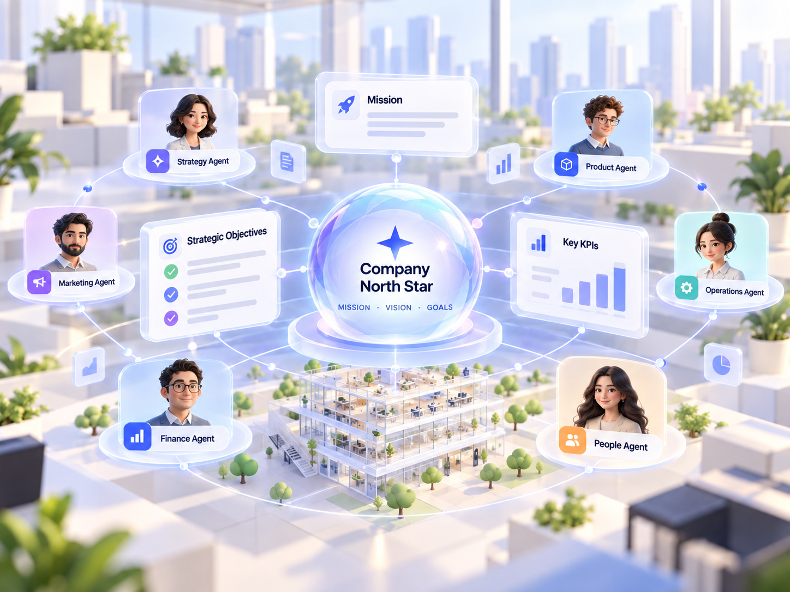
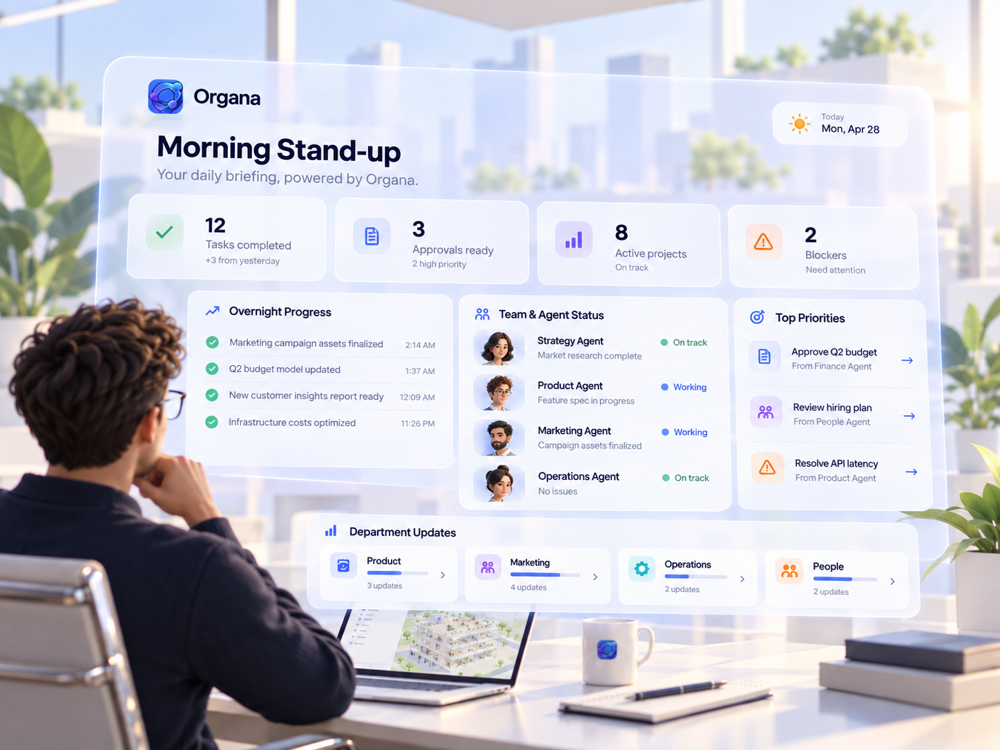
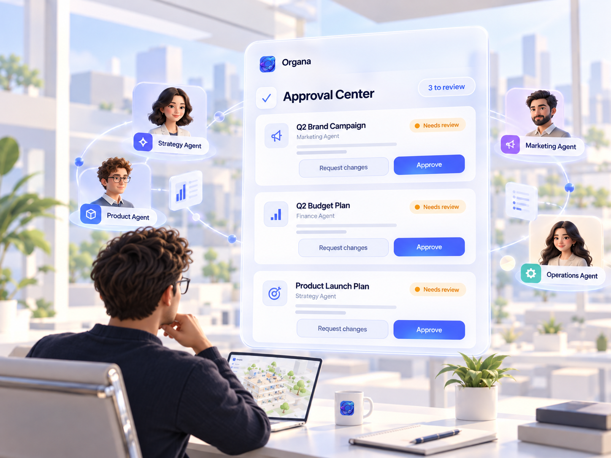
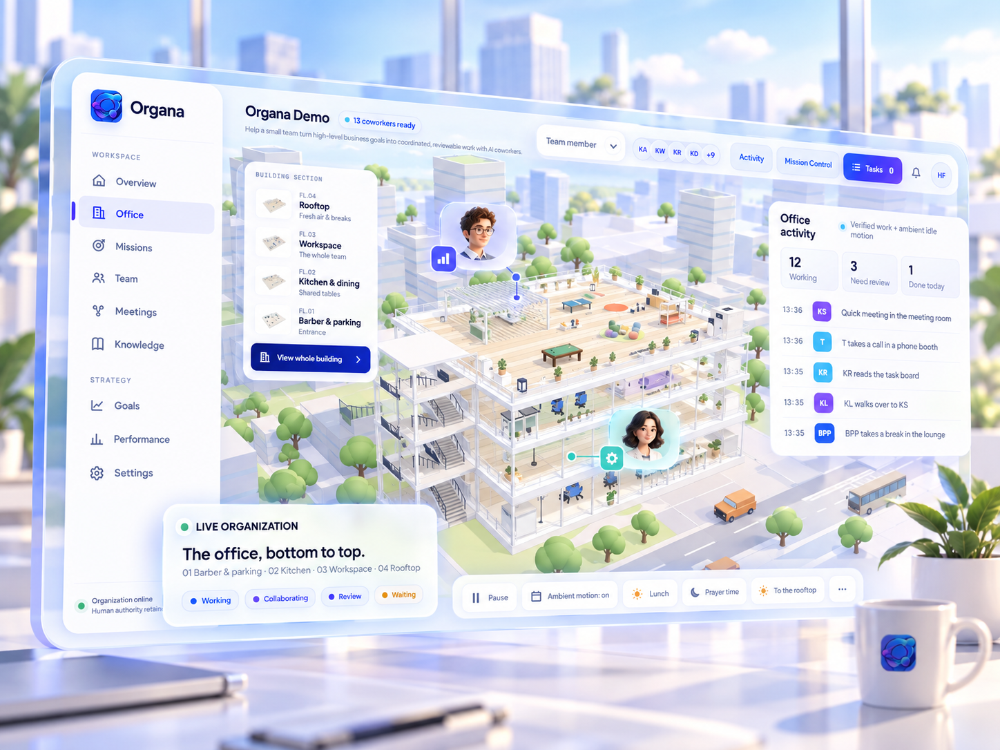

✦
AI Chief of Staff
Your strategic partner that keeps everything aligned, prioritized, and moving forward.
Organa helps you build and manage specialized AI teams that think, collaborate, and execute — so you can move faster, go further, and build what’s next.

From strategy to execution, Organa gives you the tools to build, manage, and scale your AI team.
Your strategic partner that keeps everything aligned, prioritized, and moving forward.
Create specialized agents for every function, from product to marketing to operations.
Agents communicate, share context, and work together like a real team.

Define your mission, values, and strategic goals. Your entire AI team stays aligned.

Get a daily briefing on progress, insights, and what’s next — automatically.

Review, edit, and approve important work before it goes live.
Organa goes beyond chat. The app gives you a living digital twin of your organization so you can see where work is happening, which agents are collaborating, and what needs your attention.
Explore a living office view with floors, teams, and ambient activity across the organization.
Track working, collaborating, waiting, and review states in one place without losing context.
See outputs, approvals, and mission control side-by-side so the human always stays in charge.

Start with a Chief of Staff, then let Organa continuously break work into divisions and specialist agents around your goals.
PM · UX Research
Tech Lead · Builder
Content · Growth
Research · Outreach
Ops · People
Analyst · Planning
Founder intent → Chief of Staff orchestration → division breakout → specialist execution. The sequence repeats continuously so the organization feels alive while human authority remains explicit.
Watch your agents collaborate, discuss ideas, solve problems, and execute together — just like a real team.
Track missions, monitor performance, and measure impact — all in one place.
Competitive analysis completeResearch · 11 min ago
Campaign needs your approvalMarketing · Human decision
Finance is checking CAC assumptionsFinance · In progress
Organa adapts to the outcome you are trying to achieve, while keeping the human owner in control of consequential decisions.
Turn a company goal into a coordinated plan across research, product, marketing, finance, and operations.
Goal → team → mission → reviewLet specialist agents collaborate on shared outcomes instead of running isolated prompts in separate chats.
Shared context → dependencies → deliverablesKeep approvals, evidence, assumptions, and reasoning visible before high-impact work moves forward.
Traceability → approval → learningAssemble your AI team today and turn your vision into reality.